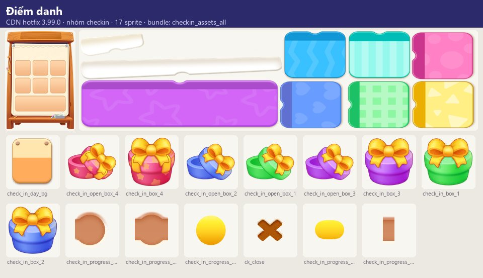
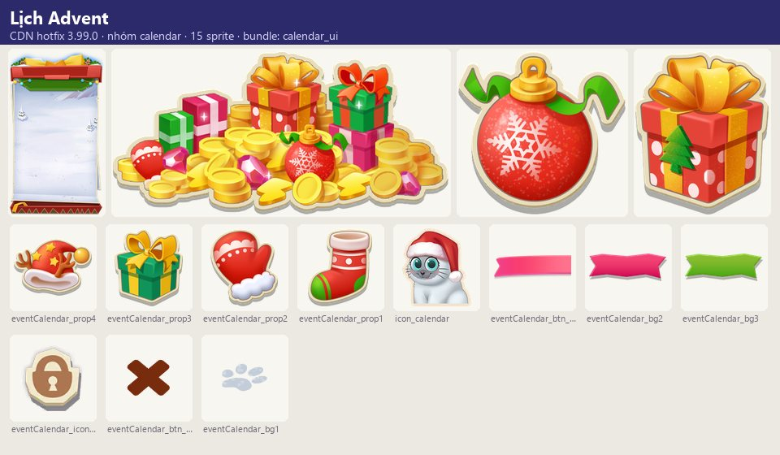
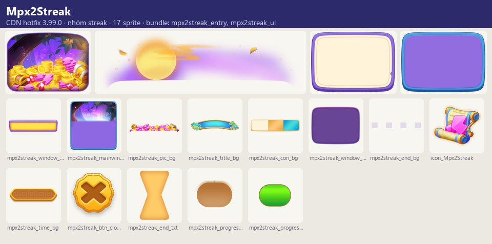
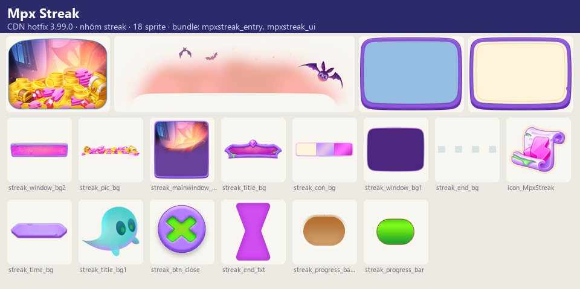
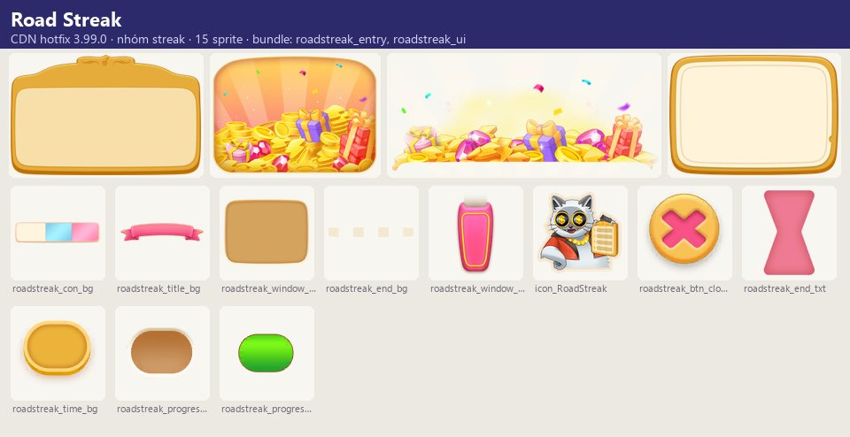
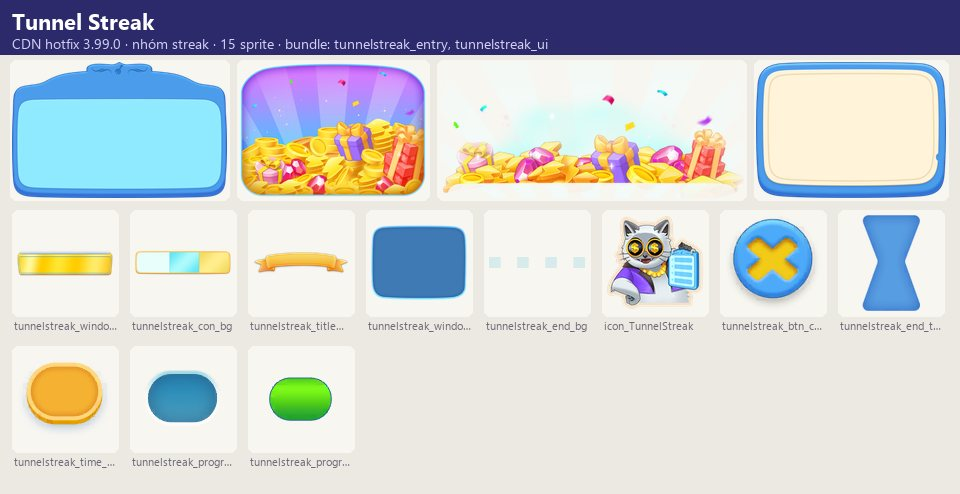
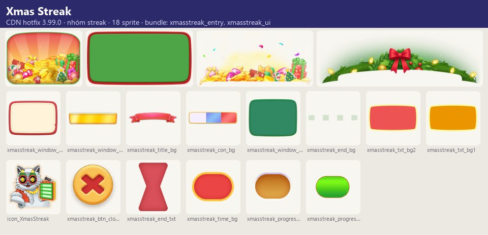
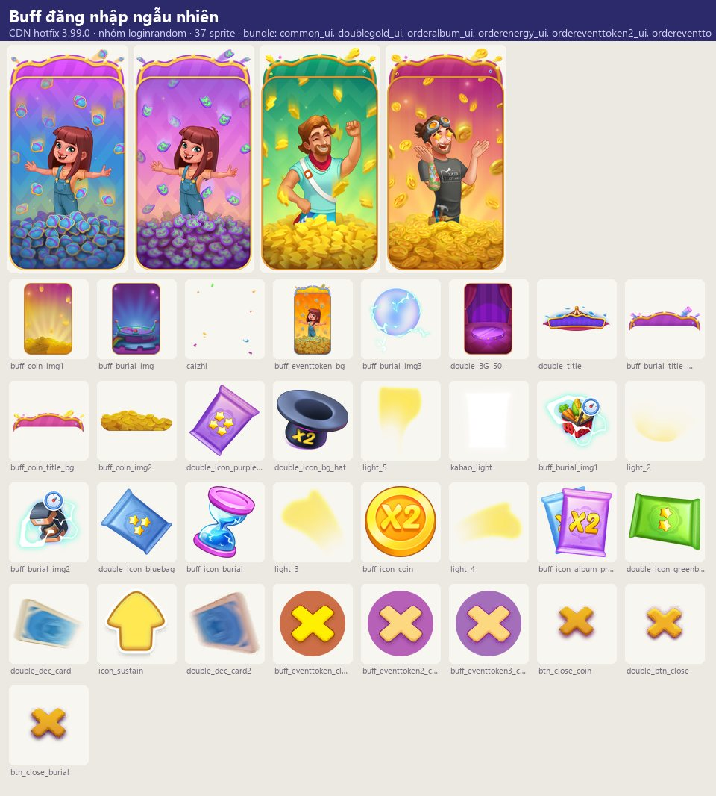

Tài nguyên hình ảnh
Nhóm cơ chế thưởng đăng nhập: Daily Rewards (điểm danh hằng ngày, đếm tổng ngày), Coconut's Advent Calendar (lịch quà mùa Giáng sinh, mỗi ngày một quà, 7 phần…
Mô tả
- Nhóm cơ chế thưởng đăng nhập: Daily Rewards (điểm danh hằng ngày, đếm tổng ngày), Coconut's Advent Calendar (lịch quà mùa Giáng sinh, mỗi ngày một quà, 7 phần quà có tên), Streak (sự kiện chuỗi ngày làm nhiệm vụ liên tiếp, có nhánh VIP trả phí — biến thể Mpx/Mpx2/Road) và Login Random Buff (vào game ngẫu nhiên nhận một buff tạm thời: x2 vàng, thưởng gói thẻ/năng lượng/vàng/điểm sự kiện theo đơn, hoặc máy tạo không hồi chiêu).
Còn thiếu / chưa xác minh
Mở khóa & điểm vào
Daily Rewards theo level (preview_title_checkin). Calendar/Streak/Login buff theo lịch server.
Điểm vào:
- Popup khi vào game
- Biểu tượng Daily Rewards / Calendar / Streak trên HUD
Cách hoạt động
- Daily Rewards: CheckInStartWindow → chạm nhận quà miễn phí → chạm mở quà → hẹn ngày mai; hiển thị 'Total Days'.
- Advent Calendar: mỗi ngày (Day {0}) mở một quà của Coconut (Christmas Stocking, Cozy Gloves, Generous Gift, Santa's Hat, Sleigh Bell, St.
- Nick's Chest, Secret Santa Prize); quà chưa tới hiển thị đếm ngược 'Next gift in:'.
- Streak: danh sách nhiệm vụ theo chuỗi ngày (collect coins, event tokens, cards, thẻ 4/5 sao, dùng công cụ sự kiện, merge vật phẩm ở bảng phiêu lưu/đa bảng, mở khóa vật phẩm, đánh quái); hoàn thành nhận thưởng; mua VIP mở thưởng độc quyền; 'Collect All' nhận một lần; hết sự kiện trả thưởng chưa nhận.
- Login Random Buff: khi vào game hệ thống bốc một buff, hiển thị cửa sổ + hoạt ảnh bay tới mục tiêu; buff có thời hạn (vd.
- Energy Mania {0} phút).
Luồng chi tiết theo code
Daily Rewards: CheckInStartWindow → chạm nhận quà miễn phí → chạm mở quà → hẹn ngày mai; hiển thị 'Total Days'. Advent Calendar: mỗi ngày (Day {0}) mở một quà của Coconut (Christmas Stocking, Cozy Gloves, Generous Gift, Santa's Hat, Sleigh Bell, St. Nick's Chest, Secret Santa Prize); quà chưa tới hiển thị đếm ngược 'Next gift in:'. Streak: danh sách nhiệm vụ theo chuỗi ngày (collect coins, event tokens, cards, thẻ 4/5 sao, dùng công cụ sự kiện, merge vật phẩm ở bảng phiêu lưu/đa bảng, mở khóa vật phẩm, đánh quái); hoàn thành nhận thưởng; mua VIP mở thưởng độc quyền; 'Collect All' nhận một lần; hết sự kiện trả thưởng chưa nhận. Login Random Buff: khi vào game hệ thống bốc một buff, hiển thị cửa sổ + hoạt ảnh bay tới mục tiêu; buff có thời hạn (vd. Energy Mania {0} phút).
Tài nguyên hình ảnh (8)
8 bảng sprite trích từ bundle sự kiện trên CDN hotfix 3.99.0 (mỗi bảng là một chủ đề/biến thể; sprite rời, không phải màn hình đã dựng). Bấm ảnh để phóng to; nhãn UC dẫn tới use case tương ứng.
















Use case (4)
Bấm vào từng use case để mở. Mở/đóng tất cả
UC-01 Điểm danh hằng ngày
Các bước- CheckInStartWindow
- Nhận quà
- Mở quà
| Actor | Player |
|---|---|
| Trigger | Vào game ngày mới |
| Điều kiện | Đã mở |
| Kết quả | Quà ngày |
| Quy tắc / số liệu | 'Sign in tomorrow to claim your next reward!' |
| Evidence | text check_in_*; prefab CheckInMainWindow, CheckInStartWindow |
UC-02 Lịch Advent của Coconut
Các bước- Mở lịch
- Nhận quà ngày
- Chạm liên tục để mở
| Actor | Player |
|---|---|
| Trigger | Mùa Giáng sinh |
| Điều kiện | Sự kiện chạy |
| Kết quả | Quà theo ngày |
| Quy tắc / số liệu | 7 quà có tên |
| Evidence | text calendar_*; prefab CalendarMainWindow; audio Calendar_others |
UC-03 Streak
Các bước- Làm nhiệm vụ mỗi ngày
- Nhận thưởng chuỗi
- Mua VIP để mở thưởng độc quyền
| Actor | Player |
|---|---|
| Trigger | Sự kiện Streak |
| Điều kiện | — |
| Kết quả | Thưởng chuỗi ngày |
| Quy tắc / số liệu | Loại nhiệm vụ: gold, decor, card, card_4star, card_5star, dig, farm, freefall, break, sticker, merge_adv, merge_mtb, unlock_adv, unlock_mtb, unlock_pb, freefall_target_beaten |
| Evidence | text streak_*; prefab Streak/MpxStreak*, Mpx2Streak*, RoadStreak*, StreakRewardWindow |
UC-04 Buff đăng nhập ngẫu nhiên
Các bước- Popup buff
- Hoạt ảnh bay tới mục tiêu
- Buff có hiệu lực trong thời hạn
| Actor | System |
|---|---|
| Trigger | Vào game |
| Điều kiện | Trúng buff |
| Kết quả | Tăng thưởng tạm thời |
| Quy tắc / số liệu | 8 loại: DoubleGold, OrderAlbum (gói thẻ x2), OrderEnergy, OrderEventToken / 2 / 3, OrderGold, ZeroCDItem (máy tạo không hồi chiêu) |
| Evidence | prefab LoginRandomBuff/*; text order_buff_*, pop_buff_* |
Cấu hình (5)
Gộp mọi nguồn: const trong code, JSON mặc định trong Resources, bảng static, storage key, AB test, cờ server.
| Nguồn | Key | Kiểu | Giá trị | Ý nghĩa | Nơi định nghĩa |
|---|---|---|---|---|---|
| asset | Quà Advent | list | Christmas Stocking, Cozy Gloves, Generous Gift, Santa's Hat, Sleigh Bell, St. Nick's Chest, Secret Santa Prize | calendar_reward_title1..7 | |
| asset | Login buff | enum | DoubleGold, OrderAlbum, OrderEnergy, OrderEventToken, OrderEventToken2, OrderEventToken3, OrderGold, ZeroCDItem | UIPrefabConfig LoginRandomBuff/* | |
| storage key | CallOncePerDay | int | epoch day | Đánh dấu đã chạy tác vụ trong ngày | PlayerPrefs |
| CDN hotfix 3.99.0 (catalog Addressables + bundle) | Biến thể chủ đề — nhóm loginrandom | list | 9: Doublegold, Orderalbum, Orderbase, Orderenergy, Ordereventtoken, Ordereventtoken2, Ordereventtoken3, Ordergold, Zerocditem | Skin/biến thể có bundle trên CDN; server chọn skin nào chạy | facts/runtime/decoded/cdn_themes.json |
| CDN hotfix 3.99.0 (catalog Addressables + bundle) | Biến thể chủ đề — nhóm streak | list | 5: Mpx2Streak, Mpx Streak, Road Streak, Tunnel Streak, Xmas Streak | Skin/biến thể có bundle trên CDN; server chọn skin nào chạy | facts/runtime/decoded/cdn_themes.json |
Giao diện (UI)
| Element | Class | Mục đích |
|---|---|---|
| Điểm danh | CheckIn/Prefab/* | |
| Lịch | Calendar/Calendar_prefab/CalendarMainWindow | |
| Streak | Streak/* | |
| Buff | LoginRandomBuff/* |
Storage keys
activity CallOncePerDay
Chưa đọc được / ghi chú
- Phần thưởng từng ngày, độ dài chuỗi, xác suất từng buff và thời lượng do server
Tính năng liên quan
Buff thuộc tính (Perk) Đơn hàng & khách Nhiệm vụ ngày/tuần Khung sự kiện chung
Nguồn đã đọc
- notes/packs/StreakCheckIn.md
- facts/runtime/cdn_png/index.json + screens/cdn_shots.json (bundle sự kiện CDN)